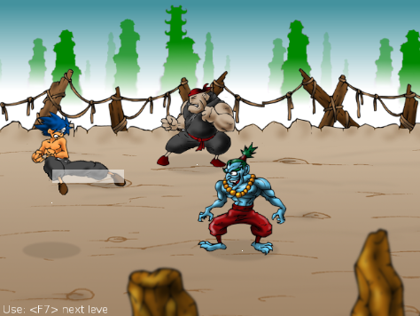

Durante el juego uno puede golpear a los enemigos y a su vez los enemigos nos pueden golpear. A este comportamiento se lo denomina colisiones. Y son las únicas interacciones entre personajes que existen.
Hay una instancia de este objeto dentro de Stage, que a su vez es parte de Game.
CollisionManager se encarga de detectar si los personajes se estan golpeando o no. Para ello tiene dos listas de personajes, una se utiliza para el protagonista y otra para los enemigos.
El objeto CollisionManager en realidad se actualiza todo el tiempo buscando atributos en los personajes para determinar si existen colisiones o no.
Cuando un objeto quiere emitir una colisión tienen que pasar dos cosas. Una es que el personaje esté en una de las listas del CollisionManager, cosa que se realiza con frecuencia cuando se genera el objeto:
new_enemy = EnemyExample()...
self.stage.collision_manager.add_enemy(new_enemy)
Lo segundo que tiene que hacer el personaje para emitir una colisión es llamar al método set_collision de la clase Sprite:
Define un area de colision para emitir una colisión.
Este metodo produce un rectángulo que el CollisionManager va a detectar y con eso va a ver si existe un colisión con alguien mas.
Nota
Si quieres que los rectangulos de colision se vean en pantalla tienes que habilitar la variable DEBUG en el archivo config.py